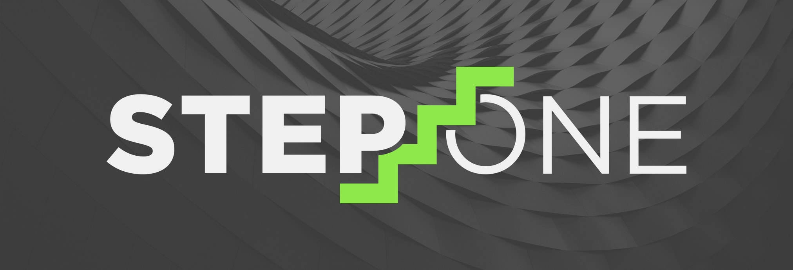

Latest News
Step Fifteen - The Final Product 23 April, 2020
After a long road, we are finally here. The final presentation to the Senior Class of Capstone Computing is today. We will be covering our struggles, what we have learned, and we will give a live demonstration of our working app. You can download our app and Sprint 3 from the "Downloads" page.
From all of us on the development team, welcome to indieHood.
Step Fourteen - T-1 Week Until Live Demonstrations 16 April, 2020
We are now in the one week range! This entire semester has flown by, but also dragged on. We have Google Maps implemented, we have a login and registration fragment that interacts with Firebase, we have recycler views that collect and pull information from Firebase, we have a way to report issues and suggest venues, and we have user experiences working such as favoriting an artist and being interested in a show!
There is still a lot to be done, but the documentation side of things is starting to pick up as well. We have a video being recorded to place on the website, papers due, and a presentation to make!
Step Thirteen - Updated UI 14 April, 2020
Nobody wants to use an ugly app. Plain and simple. indieHood got a new logo today. We have also done a much needed update to the layout of some of the main pages. Who knew getting photos to store in Firebase would be so tricky?
On another note, we are trying to reuse code more. We have found that most everyone needs some part of someone else's code, and much of it is very reusable. Communication between the group members has greatly improved now that we are used to remote learning. Progress is really starting to pick up.
Step Twelve - A Place For the Artist 9 April, 2020
The artist homepage has been highly overlooked up to this point, mainly because there was not login screen which is the main pathway to the artist page. We were able to put this view to the very end, which is good because it mainly uses a recycler view. After this view is complete, we will have all views that the user will interact with. The hard part is going to be getting them to all interact.
Step Eleven - The Home Stretch 7 April, 2020
We did it! Another sprint down. Our final sprint is in two short weeks, and we are currently in the planning stages. As with every sprint, this includes updating our project backlog, creating a sprint backlog, and planning daily meetings.
Our largest goals for this sprint are to get a good user flow, update the UI, get all views linked together, and track all bugs. We know our app will not be perfect but we want to detect any major design flaws and find what makes the app crash. If we can break it, we can fix it.
Step Ten - Sprint Two 2 April, 2020

You can now download our second sprint in the "Downloads" page. We did our first remote presentation, and it went well for the circumstances. Our demo was shorter this time because most of the work came from Firebase. Because Firebase is not fully implemented yet, there wasn't much to show.
UPDATE: We received a 92% on Sprint Two. There is definitely work to be done, but we are all happy to receive a passing grade in the midst of a Stay-at-Home Order.
Step Nine - RecyclerView 10 March, 2020
We have successfully connected Firebase to the RecyclerView! This is a major accomplishment because it is the first step in sending and receiving data in live time. We will be looking into connecting Google API's next. We are adjusting to online learning and remote Zoom meetings for communication.
Step Eight - COVID-19 and Spring Break 10 March, 2020

We are back from spring break, well... two spring breaks. COVID-19 has impacted America and has shut down on-campus learning until at least the first week of April. After two weeks of uncertainty, our team is ready to be back on track.
Step Seven - Firebase Collections 10 March, 2020
We now have data in Firebase that you can see via our application! We have set up collections and documents that include User Collections and Artist Collections.
Step Six - Firebase Implementation 3 March, 2020
Now that sprint one is over with, our next step is to get a database implemented so that we can send and retrieve data in live time.
We are going to use Firebase (Firestore), as mentioned before, because it is free to use for the scale of our application. After researching other databases and how they interect with Android Studio, we also decided that it would be the easiest one to learn since no team members have any experience with Android Studio or implementing databases.
Step Five - Presentation of Sprint One 25 February, 2020
After a long few weeks, we are ready to present our progress to the class. You can download our goals and daily planning meetings from the "Downloads" page.
UPDATE: We did it! A 98% on our first assignment of the year. You have to remember as we progress, we are following a strict guideline to be on pace for our class. If this was not a school assignment, there may have been different approaches taken. We will update soon on progress of sprint two!
Step Four - A Real Application 18 February, 2020
We have an app! A very basic one, but we have something to work with now. We have learned to create an XML image for icons and how to work on XML views with the built in UI editor on Android Studio.
This application has come a long way in a short amount of time. We have a suggest venue and a login screen. We can also access a report issue screen and see a decoy favorites screen.
Step Three - Working Through Sprint One 6 February, 2020

Android Studio! Wow, what an application. We have taken the past week to watch tutorials before really diving into coding. This project is going to be semester long so it is important that we start with a good base!
We have all decided to download different emulators so that we can view the screens on different devices. The first sprint deadline is only a few weeks out so we really have to get moving.
Step Two - Laying Out a Plan 29 January, 2020
The first step to any large process is the planning phase. We are currently deciding what information is going to be stored within a database and believe that Firebase is going to be our best option for a low cost implementation.
As we move into completing our first sprint, we will be focusing on the following tasks:
- Creating a Hamburger View and Initial Navigation - Implementing Homepage Views and Show Listing Views for Users - Creating a Shell of Navigation for Each User View
Step One - Assemble the Team 28 January, 2020
We are so glad you have chosen our app to connect you to the world of local music. Our first task as a development team is to create a plan for a functional app. We are all seniors majoring in computer science at The University of Alabama. The scope of this app is defined by Capstone Computing (CS495).
We chose to focus on local music because we are all avid music fans. One of us even plays in a band.. (hint, hint.. Chance). Tuscaloosa has an ever-growing music scene just awaiting to be found. Our hopes is that you will explore our app and town to find your own beat. Welcome to indieHood.